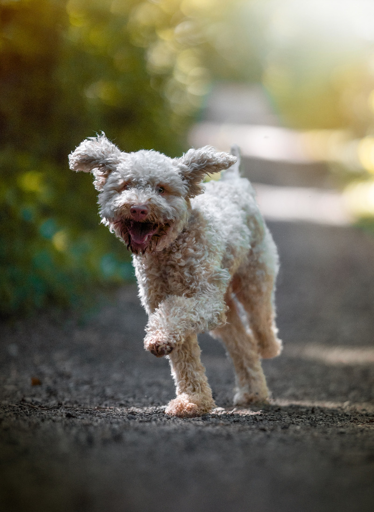

Эмми - адский пёс
Паспортное имя у Эмми - Zucchero Filato, что в переводе с итальянского означает "сахарная вата". Но пусть ее имя, как и ее милая внешность, не ввводят вас в заблуждение. Эта собака совсем не милая, она сущий крокодил и исчадие ада.
Эмми - собака породы Lagotto Romagnolo. Это итальянская водяная собака, которая имеет кудрявую шерсть и совсем не линяет Это рабочая собака, а значит, что она умеет быть полезной людям. В случае с Эммии - это работа носом. Эмми хороша в поиске трюфелей, но, к сожалению, она также очень хороша в их скоростном поедании.
Помимо трюфелей Эмми любит и другую еду. Вот список ее любимых вкусняшек с учётом собачьего приоритета:
- Бананы
- Влажный собачий корм
- Какашки других собак
Бытует мнение, что собаки совсем как дети. Действительно, уровень интеллекта собаки соответствует интеллекту 2-3-летнего человеческого ребёнка.С собаками приходится также мого заниматься, как и с детьми этого возраста. Отличие лишь в том, что дети вырастают и становятся умнее и самостоятельные, а собаки навсегда остаются маленькими детьми и очень зависимы от человека.
Плюсы и минусы собак:
Плюсы
- Собака любит вас безусловно и счастлива что вы есть
- У вас всегда есть компаньон для прогулок и путешесвтий
- Собаки смешные (но, конечно, не такие смешные как котики)
Минусы
- Продолжительность жизни собаки не велика
- От собак очень много разрушений и грязи
- Время от времени вам придется просыпаться от блюющих звуков
- Собака - это дорого. Очень-очень дорого!